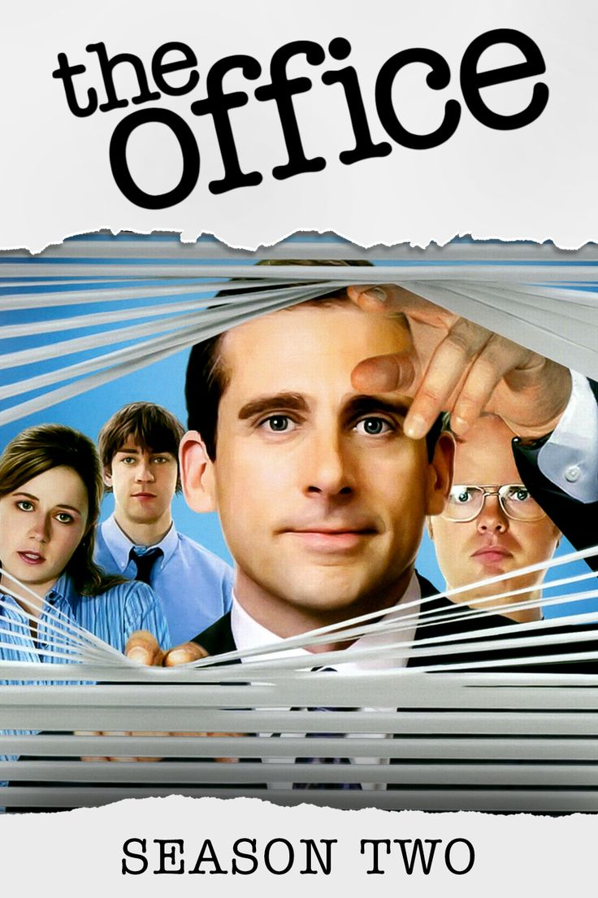
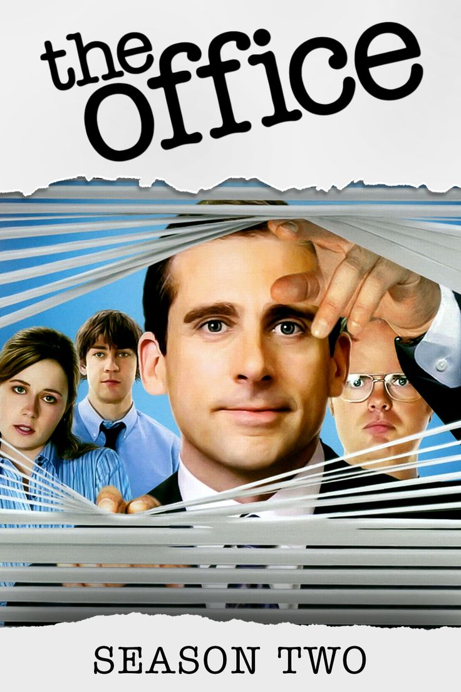

Melhores avaliados da semana
 

Aqui estão os melhores avaliados da semana! Clique nas obras para avaliar e ver avaliações de amigos.
Artistas mais bem avaliados da semana
Selton Melo é um artista brasileiro que esta semana recebeu centenas de avaliações positivas a cerca do seu último filme: "Ainda estou Aqui". O Brasil não ganhava um troféu na seleção oficial no festival italiano desde 1981, quando foi premiado por “Eles não usam Black-tie”, de Leon Hirszman.
- Contato
- Ferramentas
- Suporte